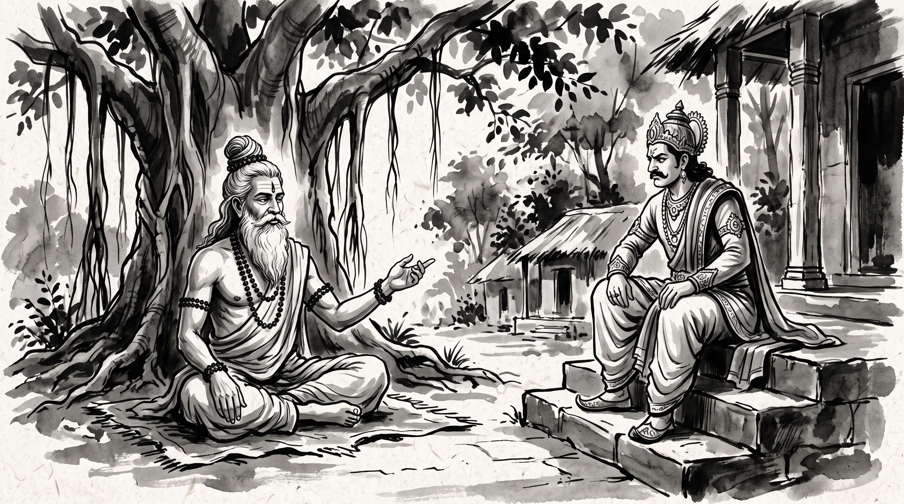

The Arrogance That Blinds: Vidura's Warning to the King

Somadeva, a seasoned counselor from the royal court, sat in the quiet shade of the forest hermitage, rubbing his tired temples. The weight of courtly dysfunction pressed heavily upon his brow.
"Revered Master," he began, bowing before the sage, "our newly appointed chief minister is sharp-witted, yet insufferably arrogant. In the assembly, he publicly belittles the elder statesmen, dismisses every seasoned warning, and claims that he alone possesses the wisdom to guide the realm. Anyone who voices prudent restraint is banished from the council. He boasts that his harsh, unyielding conduct is the hallmark of a decisive leader. How does a truthful minister survive under someone so powerful yet so blind to his own peril?"
The venerable Rishi sat composed upon a woven reed mat beneath the sprawling banyan tree. He turned a prayer bead in his weathered hand, his eyes calm and still as deep water, before offering his counsel.
The Wisdom of Vidura Niti
The Rishi recounted an immortal passage from the Mahabharata, preserved in the ancient counsel known as Vidura Niti.
King Dhritarashtra, blinded not merely in his eyes but by his deep indulgence of his arrogant son Duryodhana, asked his righteous minister Vidura how a prosperous realm is brought to ruin. Vidura replied with unflinching clarity:
"Intoxication of wealth, intoxication of power, and intoxication of learning—these three are intoxications for the proud, but disciplines for the noble. A man blinded by these cannot see the cliff until he has already stepped off it."
"Vidura understood," the Rishi explained softly, "that unbridled arrogance is inherently self-terminating, though it exacts a terrible toll upon those in its shadow. A rigid, towering oak proudly defies the great storm, refusing to sway, and is violently uprooted by the roots. The humble grass bends with the gale, survives the tempest, and rises unblemished once the storm has passed."
The Duryodhana Pattern: How Arrogance Rules
"In every court there is a Duryodhana, Somadeva," the Rishi said. "Your chief minister follows his path in three ways."
- The Hall of Echoes: He sends away the advisors who see clearly and fills the council with flatterers. Honest counsel is renamed disloyalty, until the only voice he hears is his own, returned to him by smiling men.
- The Harvest Is His, the Blight Is Yours: When a canal fills or a treaty holds, it was his genius. When the granary floods, it was the carelessness of the clerks or the spite of a rival.
- The Brittle Shell: His loud certainty hides a deep fear of being found out. He cannot bear even gentle correction, because his whole standing rests on never having been wrong.
The Rishi's Counsel: Living Under a Proud Minister
"Then how do I serve," Somadeva asked, "without losing my honour or being crushed when his tower falls?"
1. Refuse the Contest of Pride
A proud man feeds on opposition; every rival proves his importance. When he goads you in open assembly, keep your voice level. Agree with the aim he states where you honestly can, and bring the talk back to what the granary tallies and the scouts' reports show. A man who makes you angry at his folly has taken the reins of your mind.
2. Keep Your Own Ledger
The proud minister rewrites yesterday to suit today. Each evening, write down in plain words the orders he gave, the decisions made, and the stores spent, and keep the palm leaves in a sealed chest. When his orders crack under the weight of the harvest season, he will look for someone to blame. Your quiet record will stand between you and his anger.
3. Be the Grass, Not the Tree
Like the grass in the great storm, learn to bend without breaking. A proud ruler makes enemies above him, beside him, and below him, and slowly loses the very friends his rule needs. Do your own work well, and keep warm ties with the treasurers, the captains of the guard, and the keepers of the temple lands. Let the storm spend itself.
Do not wear out your spirit trying to teach humility to a man drunk on power. Let the fruit of his own deeds be his teacher. Your task is to keep your centre, guard your honour, and make sure you are not standing beneath his tower on the day it falls.
Source: Mahabharata, Udyoga Parva, Prajagara Parva, 34.41
"The giant tree that scorns the wind is shattered at the root; the supple grass that bends beneath the gale rises unbent when the morning breaks."